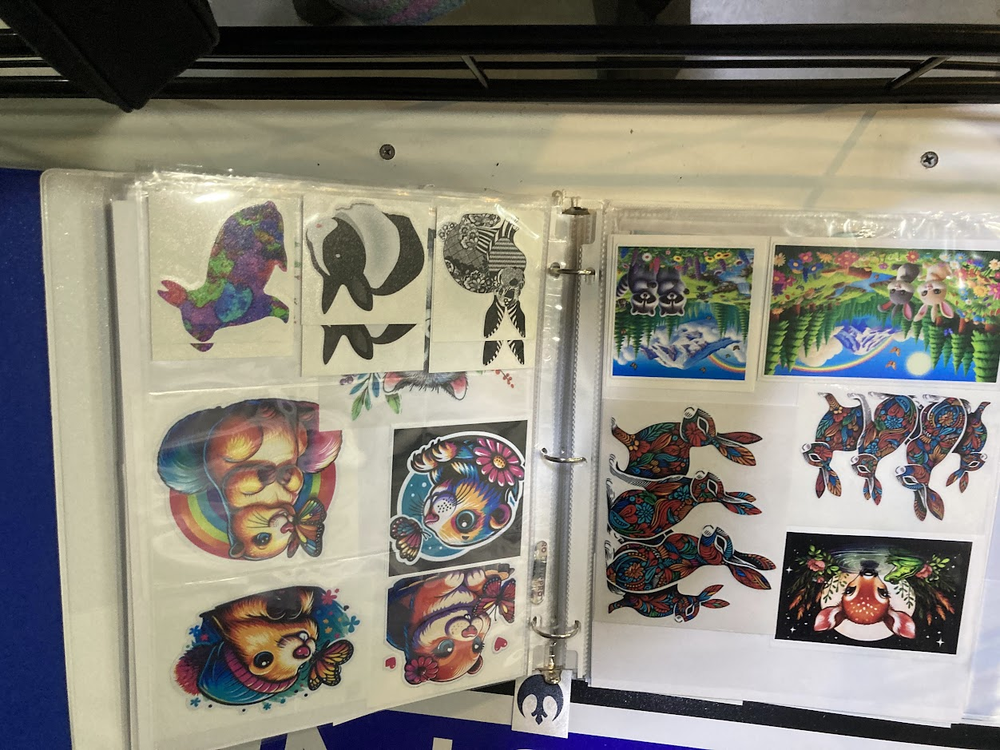
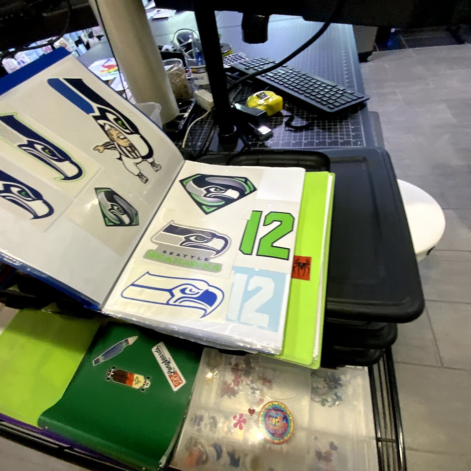
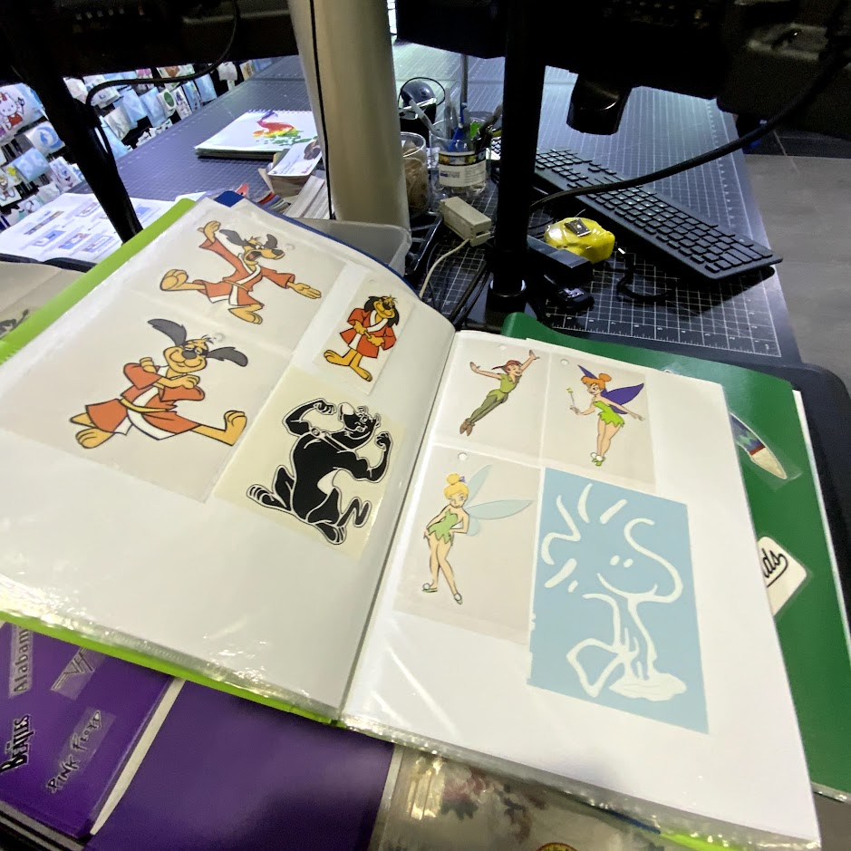
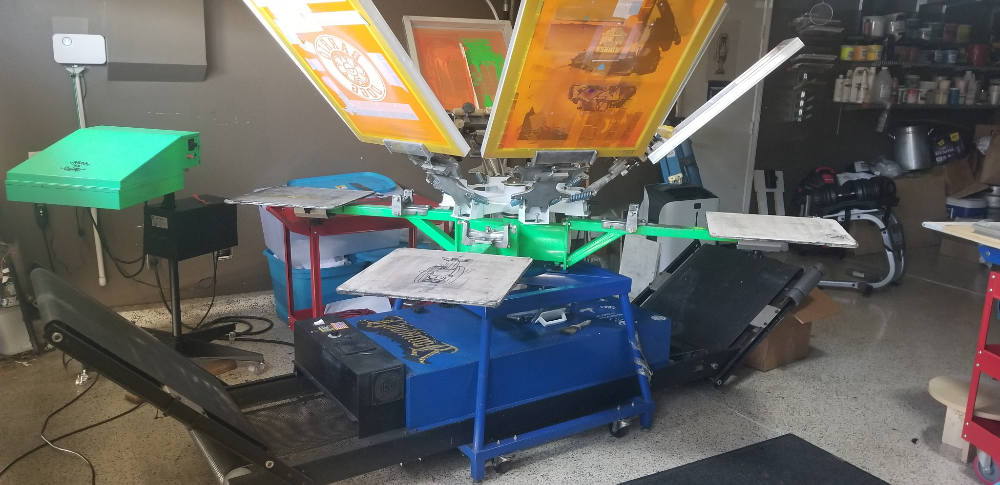
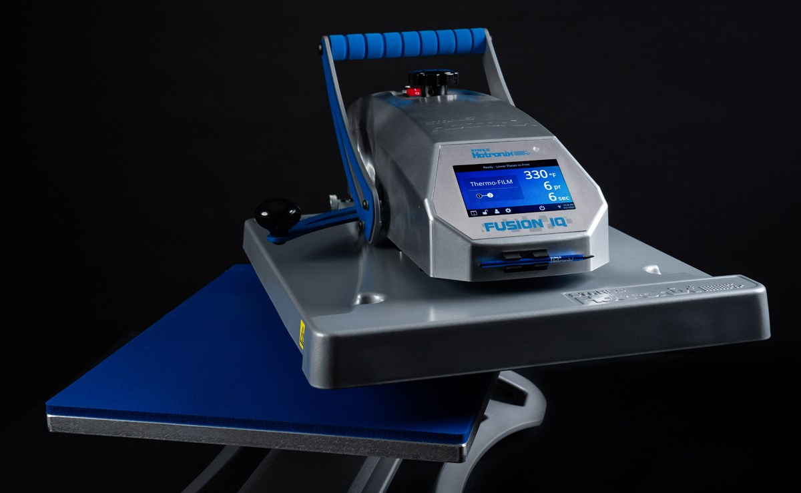

Design & communicate
Understand the purpose, plan the visual message, prepare artwork and review production-ready proofs.
 ROBERT R. RILEYSIGNAGE · GRAPHICS · PRODUCTIONPORTFOLIO / 2026
ROBERT R. RILEYSIGNAGE · GRAPHICS · PRODUCTIONPORTFOLIO / 2026From artwork and color to materials, machines and finishing: the production behind the finished design.


A finished graphic depends on good artwork, appropriate materials, precise output and careful finishing. My experience spans large flatbed screen printing for manufactured display components, multi-station garment printing, digital transfers, dye sublimation, CNC fabrication, and CO₂ and MOPA fiber-laser engraving. Different roles, shops and machines call for different processes; the goal is always to match the artwork to the material and finished use.
Understand the purpose, plan the visual message, prepare artwork and review production-ready proofs.
.png)
Prepare vector production files, select media and output methods, adjust RIP and ICC color settings, then check prints for color, alignment and finish before cutting or installation.
.png)
Apply knowledge of cutting, engraving, laminating, finishing, materials and fabrication equipment.
Coordinate real-world application, field requirements, site conditions and the finished visual outcome.
Good visual work also depends on practical knowledge of materials, tools and production.
01 / WORKSPACE
Photographic records of shops, workstations and physical production.
02 / EQUIPMENT
Examples of printing, fabrication, engraving and finishing equipment.
ACTUAL PRODUCTION ENVIRONMENTS
Original shop photographs: print production, laser fabrication and detail work in the spaces where equipment and materials are put to use.


/IMG_0965.jpg)
/0101161040a.jpg)
/1230150523a.jpg)
03 / HISTORY
Earlier shop settings and industry experience documented through photography.
SHOP / MATERIALS / PROCESS
A closer look at cutting, printing, fabrication materials and the machines behind the finished work.
ADDITIONAL PROCESS PHOTOGRAPHY
Workshop machines, service vehicles and production details show the range of tools involved in bringing physical designs to life.
THE SHOP / MORE PROCESS RECORDS
Further views of large-format production, fabrication equipment and shop settings, preserving the history behind the finished graphics.
CUSTOM OBJECTS / 3D FABRICATION
Fabricated forms, three-dimensional objects and real workshop samples photographed at the source.
FIELD SERVICE / INDUSTRIAL EQUIPMENT
From the sign-service truck to the laser bed, these tools carry creative work through fabrication and installation.
DIGITAL TOOLS / APPAREL TRANSFER / MERCHANDISE
Additional working-shop photography spanning resin printing, garment heat transfer, and the store’s printed decal assortment.
My production experience includes screen-printing presses, garment transfers, sample preparation and the finishing steps that turn artwork into a usable product.






My sample books show the variety of materials, graphics and transfer applications I've handled in the shop.
Additional photographs from my equipment archive, showing printing stations and large fabrication machinery at working scale.
.png)
.png)
/7C78B285A419_1681758519.jpg)
STUDIO / PRINT SYSTEMS / ADDITIONAL VIEWS
A photographic walk through the tools, spaces and working systems of a commercial graphics shop.
FABRICATION / TOOLS / MACHINERY
A collection of workshop machinery, manufacturing tools and production details—different views of the equipment behind physical work.
MATERIALS / PROTOTYPES / DETAIL
Selected supporting photographs of equipment, production materials and prototype-making.